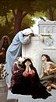

|
|
|
Jeremiah 31
|
|
| 31:1
At the same time, saith the LORD, will I be the God of all the families of
Israel, and they shall be my people. |
|
| 31:2
Thus saith the LORD, The people which were left of the sword found grace
in the wilderness; even Israel, when I went to cause him to rest. |
|
| 31:3
The LORD hath appeared of old unto me, saying, Yea, I have loved thee with
an everlasting love: therefore with lovingkindness have I drawn thee. |
|
| 31:4
Again I will build thee, and thou shalt be built, O virgin of Israel: thou
shalt again be adorned with thy tabrets, and shalt go forth in the dances of
them that make merry. |
|
| 31:5
Thou shalt yet plant vines upon the mountains of Samaria: the planters
shall plant, and shall eat them as common things. |
|
| 31:6
For there shall be a day, that the watchmen upon the mount Ephraim shall
cry, Arise ye, and let us go up to Zion unto the LORD our God. |
|
| 31:7
For thus saith the LORD; Sing with gladness for Jacob, and shout among the
chief of the nations: publish ye, praise ye, and say, O LORD, save thy
people, the remnant of Israel. |
|
| 31:8
Behold, I will bring them from the north country, and gather them from the
coasts of the earth, and with them the blind and the lame, the woman with
child and her that travaileth with child together: a great company shall
return thither. |
|
| 31:9
They shall come with weeping, and with supplications will I lead them: I
will cause them to walk by the rivers of waters in a straight way, wherein
they shall not stumble: for I am a father to Israel, and Ephraim is my
firstborn. |
|
| 31:10
Hear the word of the LORD, O ye nations, and declare it in the isles afar
off, and say, He that scattered Israel will gather him, and keep him, as a
shepherd doth his flock. |
|
| 31:11
For the LORD hath redeemed Jacob, and ransomed him from the hand of him
that was stronger than he. |
|
| 31:12
Therefore they shall come and sing in the height of Zion, and shall flow
together to the goodness of the LORD, for wheat, and for wine, and for oil,
and for the young of the flock and of the herd: and their soul shall be as a
watered garden; and they shall not sorrow any more at all. |
|
| 31:13
Then shall the virgin rejoice in the dance, both young men and old
together: for I will turn their mourning into joy, and will comfort them,
and make them rejoice from their sorrow. |
|
| 31:14
And I will satiate the soul of the priests with fatness, and my people
shall be satisfied with my goodness, saith the LORD. |
|
| 31:15
Thus saith the LORD; A
voice was heard in Ramah, lamentation, and bitter weeping; Rachel weeping for
her children refused to be comforted for her children, because they were
not. |
 (31:15) "A voice was heard in Ramah, lamentation, and bitter weeping;
Rachel weeping for her children refused to be comforted for her children, because they were not." (31:15) "A voice was heard in Ramah, lamentation, and bitter weeping;
Rachel weeping for her children refused to be comforted for her children, because they were not."
Matthew (2:17-18)
quotes this verse, claiming that it was a prophecy of King Herod's alleged
slaughter of the children in and around Bethlehem after the birth of Jesus. But
this passage refers to the Babylonian captivity, as is clear by reading the next
two verses (16 and 17), and, thus, has nothing to do with Herod's massacre.
Rachel weeping for her children
(Stephen Gjertson, 1991)
|
| 31:16
Thus saith the LORD; Refrain thy voice from weeping, and thine eyes from
tears: for thy work shall be rewarded, saith the LORD; and they shall come
again from the land of the enemy.
|
| 31:17
And there is hope in thine end, saith the LORD, that thy children shall
come again to their own border.
|
| 31:18
I have surely heard Ephraim bemoaning himself thus; Thou hast chastised
me, and I was chastised, as a bullock unaccustomed to the yoke: turn thou
me, and I shall be turned; for thou art the LORD my God.
|
| 31:19
Surely after that I was turned, I repented; and after that I was
instructed, I smote upon my thigh: I was ashamed, yea, even confounded,
because I did bear the reproach of my youth.
|
| 31:20
Is Ephraim my dear son? is he a pleasant child? for since I spake against
him, I do earnestly remember him still: therefore my bowels are troubled for
him; I will surely have mercy upon him, saith the LORD. |
|
| 31:21
Set thee up waymarks, make thee high heaps: set thine heart toward the
highway, even the way which thou wentest: turn again, O virgin of Israel,
turn again to these thy cities. |
|
| 31:22
How long wilt thou go about, O thou backsliding daughter? for the LORD hath created a
new thing in the earth, A woman shall compass a man. |
|
| 31:23
Thus saith the LORD of hosts, the God of Israel; As yet they shall use
this speech in the land of Judah and in the cities thereof, when I shall
bring again their captivity; The LORD bless thee, O habitation of justice,
and mountain of holiness. |
|
| 31:24
And there shall dwell in Judah itself, and in all the cities thereof
together, husbandmen, and they that go forth with flocks. |
|
| 31:25
For I have satiated the weary soul, and I have replenished every sorrowful
soul. |
|
| 31:26
Upon this I awaked, and beheld; and my sleep was sweet unto me. |
|
| 31:27
Behold, the days come, saith the LORD, that I will sow the house of Israel
and the house of Judah with the seed of man, and with the seed of beast. |
|
| 31:28
And it shall come to pass, that like as I have watched over them, to pluck
up, and to break down, and to throw down, and to destroy, and to afflict; so
will I watch over them, to build, and to plant, saith the LORD. |
|
| 31:29
In those days they
shall say no more, The fathers have eaten a sour grape, and the children's
teeth are set on edge. |
 (31:29-30) "In those days they shall say no
more, The fathers have eaten a sour grape, and the children's teeth are set on
edge. But every one shall die for his own iniquity." (31:29-30) "In those days they shall say no
more, The fathers have eaten a sour grape, and the children's teeth are set on
edge. But every one shall die for his own iniquity."
Are children punished for the sins of their parents?
|
| 31:30
But every one shall
die for his own iniquity: every man that eateth the sour grape, his
teeth shall be set on edge.
|
| 31:31
Behold, the days come, saith the LORD, that I will make a new covenant
with the house of Israel, and with the house of Judah: |
|
| 31:32
Not according to the covenant that I made with their fathers in the day
that I took them by the hand to bring them out of the land of Egypt; which
my covenant they brake, although I was an husband unto them, saith the
LORD: |
(31:32) Misquoted in Hebrews 8:9 as:
"Not according to the covenant that I made with their fathers in the day
when I took them by the hand to lead them out of the land of Egypt; because
they continued not in my covenant, and I regarded them not, saith the Lord."
|
| 31:33
But this shall be the covenant that I will make with the house of Israel;
After those days, saith the LORD, I will put my law in their inward parts,
and write it in their hearts; and will be their God, and they shall be my
people.
|
| 31:34
And they shall teach no more every man his neighbour, and every man his
brother, saying, Know the LORD: for they shall all know me, from the least
of them unto the greatest of them, saith the LORD: for I will forgive their
iniquity, and I will remember their sin no more. |
(31:34)
"I will forgive their
iniquity, and I will remember their sin no more."
Does God forgive sins?
|
| 31:35
Thus saith the LORD, which giveth the sun for a light by day, and the
ordinances of the moon and of the stars for a light by night, which divideth
the sea when the waves thereof roar; The LORD of hosts is his name: |
|
| 31:36
If those ordinances depart from before me, saith the LORD, then the seed
of Israel also shall cease from being a nation before me for ever. |
|
| 31:37
Thus saith the LORD; If heaven above can be measured, and the foundations of the
earth searched out beneath, I will also cast off all the seed of Israel
for all that they have done, saith the LORD. |
 (31:37) "The foundations of the earth" (31:37) "The foundations of the earth"
The earth is on foundations and does not move.
|
| 31:38
Behold, the days come, saith the LORD, that the city shall be built to the
LORD from the tower of Hananeel unto the gate of the corner. |
|
| 31:39
And the measuring line shall yet go forth over against it upon the hill
Gareb, and shall compass about to Goath. |
|
| 31:40
And the whole valley of the dead bodies, and of the ashes, and all the
fields unto the brook of Kidron, unto the corner of the horse gate toward
the east, shall be holy unto the LORD; it shall not be plucked up, nor
thrown down any more for ever.
|
|
|


{kind=link}